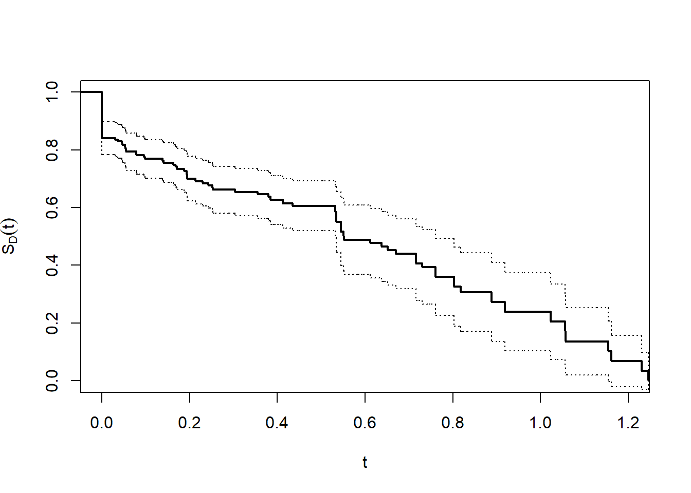

library(survival)
source("DORfunctions.R")Analysis of duration of response in oncology studies
This R-code implements the analysis of duration-of-response data described in Mao et al. (2024) for oncology studies .
Background
Duration-of-response (DOR) is often utilized to assess efficacy of oncology therapies. While valid procedures are available for estimating the mean (Huang et al. 2018), it is unclear how to estimate the distribution of DOR, which provides a fuller picture of patient experience. Using simple Kaplan–Meier estimates based on the responders can result in distorted conclusions due to the existence of non-responders (whose DOR is zero).
Notation and Methodology
Full and Observed Data
For a responder, let \(T_1\) denote the time to response. Let \(T_2\) denote the time to disease progression or death. If a patient experiences progression/death first, then \(T_1=\infty\). The DOR can be defined as \([T_2-T_1]_+\), where \(x_+=xI(x>0).\) Thus, DOR is \(T_2-T_1\) for responders, i.e., those with \(T_1<\infty\), and 0 for nonresponders. For notational convenience, set \(T_1=T_2\) for nonresponders.
Due to limited follow-up, the entire distribution of DOR is not identifiable. Instead, we define the restricted DOR within a time window as \(D=T_2\wedge \tau -T_1\wedge \tau\), where \(\tau\) is a pre-specified restriction time. Our goal is to estimate the survival function of \(D:\) \[S_D(t)=P(D>t), \,\,\,\,\, t\in [0, \tau].\]
Let \(C\) denote the censoring time independent of \((T_1, T_2)\) and satisfying \(P(C\geq \tau)>0\). Then we observe \((X_1,\Delta_1,X_2,\Delta_2)\), where \(X_1=\min(T_1\wedge\tau, C)\), \(\Delta_1=I(T_1\wedge\tau\leq C)\), \(X_2=\min(T_2\wedge\tau,C)\), and \(\Delta_2=I(T_2\wedge\tau\leq C).\) Write \(\tilde D=X_2 - X_1\). Here both \(T_1\) and \(T_2\) are subject to the same censoring time \(C\). The observed data consist of \(n\) independent and identically distributed (i.i.d.) copies of \((X_1,\Delta_1,X_2,\Delta_2)\): \(\{(X_{1i},\Delta_{1i},X_{2i},\Delta_{2i}): i=1,\ldots,n\}.\) Write \(\tilde D_i=X_{2i}- X_{1i}\).
Estimation and Inference
A simple estimator of \(S_D(t)\) is the inverse probability censoring weighted (IPCW) estimator: \[ \hat S_D(t)=n^{-1}\sum_{i=1}^n \frac{\Delta_{2i}}{\hat{G}_C(X_{2i})} I(\tilde D_i> t), \] where \(\hat{G}_C(t)\) is the Kaplan–Meier estimator of \(G_C(t)=P(C>t)\) based on \(\{(X_{2i}, 1-\Delta_{2i}), i=1, \cdots, n\}\). To see \(\hat S_D(t)\) as a valid estimator, note that \(\Delta_{2}=1\) implies that \(X_2=T_2\wedge\tau\), \(X_1=T_1\wedge\tau\) and thus that \(\tilde D = D\). Hence, \(E\left\{\Delta_2I(\tilde D>t)/G_C(X_2)\right\}= E\left\{\Delta_2I(D>t)/G_C(T_2\wedge\tau)\right\} =E\left[E\left\{\Delta_2I(D>t)/G_C(T_2\wedge\tau)\mid T_1, T_2\right\}\right] =E\{I(D>t)\}=S_D(t)\), where the second equality follows by the independence of \(C\) and \((T_1, T_2)\). Moreover, we can show that \(\hat S_D(t)\) converges weakly to a Gaussian process with an easily estimable variance function.
The median DOR can thus be estimated by \(\inf\{t: \hat S_D(t)\geq 0.5\}\), whose variance can be estimated by the perturbing the influence functions of \(\hat S_D(t)\) using standard normal distributed random noises.
Usage and Example
R-program
To use the program, download DORfunctions.R from repo https://github.com/lmaowisc/dor. The R-file contains all functions needed to perform the analysis. We also need the standard survival package.
The main function is dorfit(x1, delta1, x2, delta2, tau, med_inf = FALSE).
Input
x1time to earliest of response, outcome event, or censoringdelta1indicator of responsex2time to earlier of outcome event and censoringdelta2indicator of outcome eventtaurestriction timemed_infwhether to make inference on the median DOR
Output
t1vector of times (t)surv1IPCW estimates of survival function \(P(D > t)\)se1pointwise standard error of \(P(D > t)\)medmedian estimate of DORmed_se, med_lo, med_hithese are standard error, lower and upper limits of the 95% confidence interval of the median, respectively, ifmed_inf = TRUE; allNULLifmed_inf = FALSE
A simulated example
Let’s simulate a data set of size \(n=200\).
# set seed for random number generation
set.seed(2023)
## simulate data
n <- 200
# set restriction time
tau <- 1.25
# full data
t1 <- pmin(rexp(n), runif(n, 0, 0.75)) # response time
t2 <- rexp(n)*1.5 # outcome event time
t1[t1>t2] <- t2[t1>t2] # set t1 = t2 for non-responders
c <- runif(n, 0, 1.5) # censoring time
# observed (censored) data
x1 <- pmin(t1, c)
delta1 <- 1*(t1<c)
x2 <- pmin(t2, c)
delta2 <- 1*(t2<c)So the observed data consist of x1, delta1, x2, and delta2. Under restriction time tau\(= 1.25\). We analyze the DOR distribution using the main function dorfit(), with inference on the median.
fitLM <- dorfit(x1, delta1, x2, delta2, tau, med_inf = TRUE)Let’s plot the estimated \(S_D(t)\) with 95% pointwise confidence limits.
za <- qnorm(0.975)
## marginal survival function P(D > t)
t <- fitLM$t1 # times
St <- fitLM$surv1 # P(D > t)
se <- fitLM$se1 # se of P(D > t)
# set up the figure
plot(c(0, 1.2), c(0, 1), type="n",xlab="t",ylab=expression(S[D](t)))
# plot the marginal curve P(D > t)
lines(stepfun(t, c(1,St)),lwd=2, do.points = FALSE) # marginal
lines(stepfun(t, c(1,St + za * se)),lty = 3, do.points = FALSE) # upper 95% CI
lines(stepfun(t, c(1,St - za * se)),lty = 3, do.points = FALSE) # lower 95% CI 
We can see that the median is close to 0.6. The precise number and confidence interval (CI) can be obtained from obj.
######## get the median ####
med <- fitLM$med
med
# [1] 0.551916
med_lo <- fitLM$med_lo
med_hi <- fitLM$med_hi
med_lo
# [1] 0.4018724
med_hi
# [1] 0.7019595So the estimated median DOR (95% CI) is 0.552 (0.402, 0.702).
References
Huang, Bo, Lu Tian, Enayet Talukder, Mace Rothenberg, Dae Hyun Kim, and Lee-Jen Wei. 2018. “Evaluating Treatment Effect Based on Duration of Response for a Comparative Oncology Study.” JAMA Oncology 4 (6): 874. https://doi.org/10.1001/jamaoncol.2018.0275.
Mao, Lu, Lu Tian, Bo Huang, Paul G. Richardson, Mace Rothenberg, Dae Hyun Kim, and Lee-Jen Wei. 2024. “Analysis of Duration-of-Response Data for Oncology Studies.”